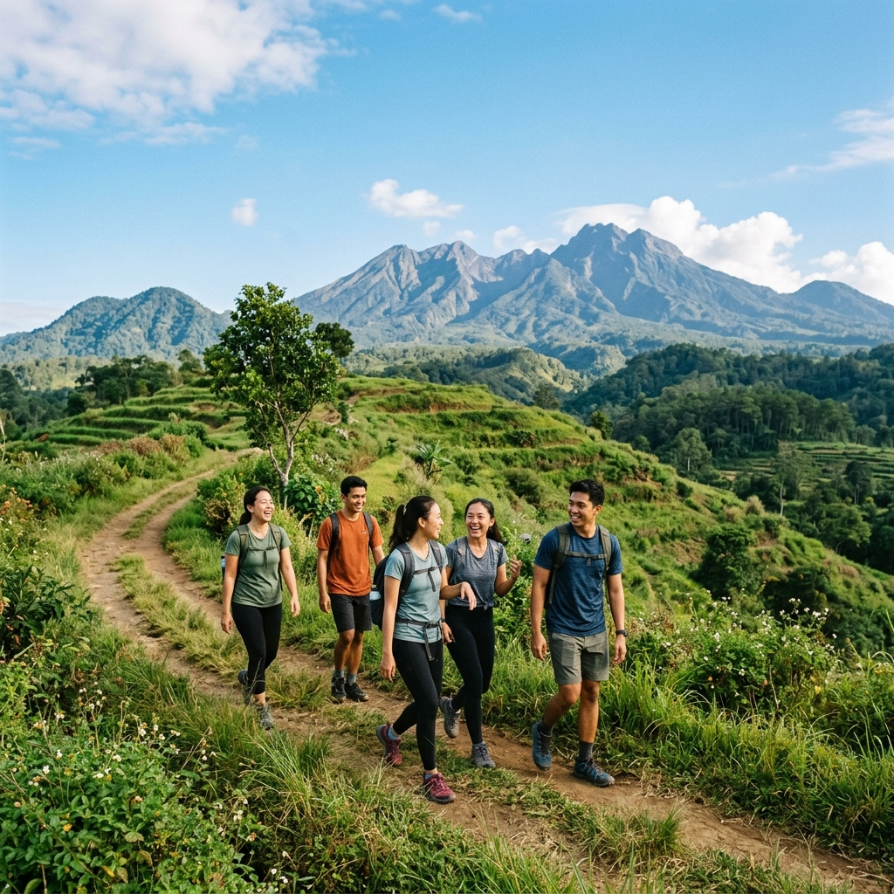

Alternatif wisata Trawas selain Batu meliputi kawasan Pacet yang berdekatan, destinasi wisata alam pegunungan, serta berbagai aktivitas outdoor yang memanfaatkan kontur perbukitan di sekitar kawasan ini.
Ringkasan Inti
- Pacet menjadi kawasan tetangga Trawas yang sering disebut bersamaan sebagai satu kesatuan destinasi wisata pegunungan.
- Kawasan ini menawarkan berbagai destinasi wisata alam seperti area perbukitan dan pemandangan pegunungan.
- Aktivitas outdoor seperti trekking ringan dan menikmati udara sejuk menjadi daya tarik utama kawasan ini.
- Suasana yang lebih tenang menjadikan kawasan ini cocok bagi wisatawan yang ingin menghindari keramaian destinasi populer.
Apa Saja Alternatif Wisata di Kawasan Trawas?
Alternatif wisata di kawasan Trawas meliputi destinasi wisata alam pegunungan, area perbukitan dengan pemandangan terbuka, serta kawasan sekitar yang menawarkan suasana udara sejuk khas dataran tinggi.
Kawasan Trawas dikenal dengan karakter alam yang masih alami, menjadikannya pilihan bagi wisatawan yang ingin menikmati pemandangan pegunungan tanpa harus berada di tengah keramaian destinasi wisata besar. Selain itu, kawasan ini juga menawarkan suasana pedesaan pegunungan yang memberikan pengalaman berbeda dibandingkan destinasi wisata modern dengan skala fasilitas yang lebih besar.
Apakah Pacet Termasuk Bagian dari Alternatif Wisata Trawas?
Pacet termasuk bagian dari alternatif wisata Trawas karena kedua kawasan ini berdekatan secara geografis dan sama-sama berada di wilayah pegunungan Kabupaten Mojokerto.
Pacet dan Trawas kerap disebut bersamaan dalam konteks wisata pegunungan Mojokerto karena karakteristik alam yang serupa, yaitu udara sejuk dan pemandangan perbukitan. Wisatawan yang berkunjung ke salah satu kawasan ini seringkali juga menyempatkan diri mengunjungi kawasan lainnya karena jaraknya yang relatif berdekatan, sehingga kedua kawasan ini dapat digabungkan dalam satu rangkaian perjalanan wisata pegunungan.

Pacet sering kali menjadi destinasi gabungan saat berwisata ke Trawas berkat lokasinya yang berdekatan dan suasana alam perbukitan yang serupa.
Aktivitas Apa yang Bisa Dilakukan di Kawasan Trawas?
Aktivitas yang bisa dilakukan di kawasan Trawas antara lain menikmati pemandangan alam pegunungan, trekking ringan di area perbukitan, serta menikmati suasana udara sejuk yang menjadi ciri khas kawasan ini.
Beberapa aktivitas yang umum dilakukan wisatawan:
- Menikmati pemandangan alam — Kawasan Trawas menawarkan pemandangan perbukitan dan udara sejuk yang cocok dinikmati sambil bersantai.
- Trekking ringan — Kontur perbukitan di kawasan ini memungkinkan aktivitas trekking ringan bagi wisatawan yang menyukai aktivitas outdoor sederhana.
- Menginap di kawasan yang lebih tenang — Wisatawan yang mencari suasana menginap jauh dari keramaian dapat mempertimbangkan akomodasi di kawasan Trawas.
- Menjelajahi kawasan sekitar Pacet — Karena letaknya yang berdekatan, wisatawan dapat menggabungkan kunjungan ke Trawas dengan menjelajahi kawasan Pacet dalam satu perjalanan.
Mengapa Kawasan Ini Cocok Bagi Wisatawan yang Menghindari Keramaian?
Kawasan Trawas dan Pacet cocok bagi wisatawan yang menghindari keramaian karena skala wisata yang belum sebesar Batu, sehingga suasana cenderung lebih tenang meski tetap menawarkan pemandangan alam pegunungan yang menarik.
Wisatawan yang merasa destinasi populer seperti Batu terlalu ramai, terutama saat musim liburan, dapat mempertimbangkan Trawas dan Pacet sebagai alternatif yang tetap menawarkan pengalaman alam pegunungan namun dengan tingkat kepadatan pengunjung yang relatif lebih rendah. Hal ini menjadikan kawasan ini pilihan yang tepat bagi wisatawan yang mengutamakan ketenangan dibandingkan keramaian destinasi wisata utama.
Kesimpulan Praktis
Alternatif wisata Trawas selain Batu mencakup kawasan Pacet yang berdekatan, dengan berbagai aktivitas seperti menikmati pemandangan alam, trekking ringan, dan menginap di suasana yang lebih tenang. Kawasan ini cocok bagi wisatawan yang ingin menikmati pengalaman wisata pegunungan tanpa harus berbagi ruang dengan keramaian destinasi populer.
FAQ
Bisa, karena kedua kawasan ini berdekatan secara geografis sehingga dapat digabungkan dalam satu rangkaian perjalanan wisata pegunungan.
Cocok, karena kawasan ini umumnya belum seramai destinasi wisata populer seperti Batu, sehingga menawarkan suasana yang lebih tenang.
Aktivitas utama meliputi menikmati pemandangan alam pegunungan, trekking ringan, serta menikmati suasana udara sejuk khas dataran tinggi.